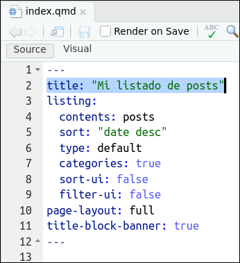
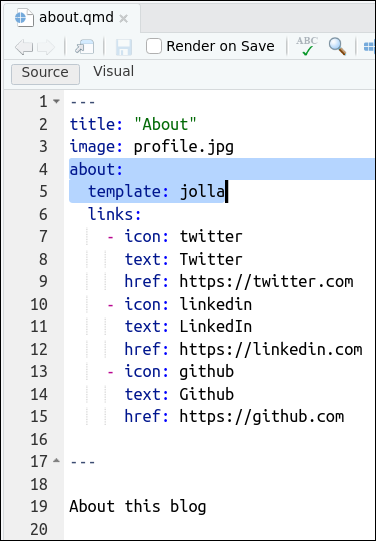

![]()
---
title: "Mi docencia"
---
Mi docencia es:
## curso 2021-2022
- [Econometría](/pdfs/econometria.pdf)
## curso 2022-2023
- [Algebra](/pdfs/econometria.pdf)Tuneado básico del blog con Quarto
(2ª parte del taller Mi primer blog con Quarto)
1 Archivo _quarto.yml
En la figura siguiente, en el lado izquierdo puedes ver el contenido original del fichero _quarto.yml. Al final dejaremos este fichero como la figura de la derecha.

_quarto.yml
_quarto.yml1.1 _quarto.yml original
_quarto.ymlComo puedes ver arriba en la Figura 1, el fichero _quarto.yml original tiene 3 partes:
La primera parte del fichero
_quarto.yml(lineas 1 y 2) simplemente específica que el proyecto es para hacer una página web (type: website). Esta primera parte del fichero_quarto.ymlno lo vamos a tocar, lo vamos a dejar igual. Sí, en realidad, un blog es una página web en la que la “Home page” o “landing page” es un poco especial, es un poco especial porque es una página con un listado de posts, PERO, en definitiva un blog es una página web.La segunda parte del fichero
_quarto.yml(lineas 4 a 12) sirve para decidir la estructura de la página web (en nuestro caso del blog). Esta segunda parte tiene 2 seccionestitle: “blog_prueba_00”: aquí podemos cambiar el título de nuestro blog
navbar: aquí podemos cambiar la estructura de la barra de navegación del blog. En el archivo original se especifica que los elementos/pestañas de navegación se situan a la derecha y que habrán 3 links o pestañas:
Abouty 2 iconos que nos llevaran a Github y a Twitter
En la tercera parte del fichero
_quarto.ymlse especifica el formato. Como toda página web el formato es html. Además se especifica unthemey un fichero.cssque nos permitirán modificar el aspecto estético del blog.
1.2 _quarto.yml modificado
Por ejemplo, podemos modificar el fichero _quarto.yml hasta dejarlo como:
_quarto.ymlComo puedes ver arriba en la Figura 2, al compararla con la Figura 1, hemos modificado el fichero _quarto.yml. Concretamente:
La primera parte del fichero
_quarto.yml(lineas 1 y 2) la hemos dejado igual. Seguimos queriendo hacer una web/blog.La segunda parte del fichero
_quarto.yml(ahora lineas 4 a 19) si la hemos modificado:Hemos cambiado el título del blog, ahora
title: "Mi blog (aún en pruebas)". Está en la linea 5.En la navbar (lineas 6 a 19): hemos cambiado la estructura de la barra de navegación del blog. Hemos hecho 3 cosas:
Hemos añadido un logo a la barra de navegación con
logo: profile.jpg(linea 7).En la parte derecha de la barra de navegación hemos añadido un icono para el email (
icon:envelope) y hemos modificado el texto que se muestra en la pestaña about, esto último lo hemos hecho context: "About me"en las lineas 9 y 10.Finalmente, hemos añadido una pestaña nueva (lineas 18 y 19) pero está vez a la izquierda de la barra de navegación:
left:(linea 17). Fijate que esta nueva pestaña llamada “Docencia” creada con- text: "Docencia"(linea 18), esta referenciando a un archivo que no existe (aún) en el Qproject, está referenciando conhref: docencia.qmd(linea 19) al archivodocencia.qmd. Lógicamente tendremos que crear este archivo.
En la tercera parte del fichero
_quarto.ymlhemos cambiado eltheme: mintyy hemos añadido las lineas 25toc: trueque creará índices en las páginas de la web/blog1, mientras que conhighlight-style: a11yse cambia el formato visual de los chunks de código que hayan en la página web.
Tarea 2.1
1.3 Crear docencia.qmd
- En el nuevo archivo
quarto.yml(linea 19) se hace referencia al archivodocencia.qmd, así que tendremos que crearlo. Para ello:
Tarea 2.2
Tarea 2.3
Tarea 2.4
Aquí puedes ver como quedaría el blog tras haber modificado
_quarto.yml. Como ves, tal como hemos dicho, hemos modificado las pestañas de la barra de navegación (por ejemplo ahora tenemos la pestañaDocenciaa la derecha de la barra de navegación) y la apariencia (theme) del blog ha cambiado (recuerdatheme: minty): ahora el color de la barra es verdecito.La verdad es que la barra de navegación en verde no me gusta mucho!! Enseguida dejaremos tiempo para que lo adaptes a tus gustos: será en la última sección de este tutorial.
2 Archivo index.qmd
En la figura siguiente, en el lado izquierdo puedes ver el contenido original del fichero index.qmd. Al final dejaremos este fichero como la figura de la derecha. Como verás, de momento, solo vamos a hacer cambios en la segunda linea: cambiaremos el título.

index.qmd
index.qmdComo ves,
index.qmdes un fichero (nuestra “Home Page”) sin contenido aparente: aparte delyamlno hay nada más. Sin embargo, justamente en elyamlse especifica, con la opciónlisting:(linea 3), que la página va a ser un listado; concrétamente un listado del contenido que haya en la carpetaposts; o sea, un listado con los posts que haya en la carpetaposts.Sí, con el trozo
contents: posts(linea 4), se está especificando la carpeta donde estará alojado el contenido de los posts. Si miras la carpetapostsverás 2 subcarpetas, una para cada uno de los 2 posts del blog.Ya hablaremos de las subcarpetas donde está el contenido de los posts más adelante, pero adelanto que en cada carpeta hay un archivo
index.qmdcon el contenido de cada post.
Tarea 2.5
3 Archivo about.qmd
- Vamos a modificar mínimamente el fichero
about.qmd. En la figura siguiente, en el lado izquierdo puedes ver el contenido original del fichero y en la derecha como lo dejaremos. Como verás solo vamos a hacer cambios en la quinta linea: cambios la plantilla predefinida.

about.qmd
about.qmdTarea 2.6
- Como has visto, si en el
yamlse activa la opciónabout:(linea 3), entonces Quarto tiene disponibles unas plantillas para crear About’s pages. Aquí tienes la documentación oficial sobre estas plantillas. Como puedes ver aquí hay 5 plantillas: jolla, trestles, solana, marquee y broadside.
4 Archivo styles.css
Puedes cambiar la apariencia estética del blog y dejarlo a tu gusto usando los
themespredefinidos en Quarto o puedes usar el archivostyles.css2De momento, el archivo
styles.cssestá vacío3El tuneado del blog con .css lo veremos con algo más de detalle en el tutorial nº 6, ahora mismo solo haremos unas modificaciones mínimas: voy a justificar el texto4.
Tarea 2.7
- Acuérdate que para ver los cambios has de volver a generar el blog:
Build > Render Website,
5 Resumen
6 Práctica
En esta sección dedicaremos un tiempo a la práctica libre para que adaptes el blog a tus necesidades y gustos. Por ejemplo puedes probar:
- Añadir una nueva página a la web (
quarto.yml)
- Modificar la apariencia del blog jugando con las opciones que nos proporciona Quarto (
index.qmd)
Práctica 2.2: Modificar la apariencia del blog (
index.qmd)
Se trata de cambiar las opciones predefinidas de tu archivo index.qmd
Con ello podremos cambiar la apariencia del listado de posts
Para ello tienes que ir jugando con las opciones que nos ha proporcionado la plantilla de Quarto en el fichero
index.qmd.la YAML inteligence te ayudará!! (vamos el autocompletado en el YAML)

- Modificar la apariencia de la página About (
about.qmd)
Práctica 2.3: Modificar la página About (
about.qmd)
Se trata de cambiar las opciones predefinidas de tu archivo about.qmd
Estaría bien que pusieses una foto tuya.
Poner los enlaces a tus redes sociales y email
Puedes adaptar el texto y dar algo de formato a la página.

---
title: Yo mismo
image: profile.jpg
about:
template: trestles #- {jolla, solana, ...}
image-width: 10em #- https://cybmeta.com/em-y-rem
image-shape: round #- rectangle, round, rounded
links:
- icon: twitter
text: Twitter
href: https://twitter.com
- icon: linkedin
text: LinkedIn
href: https://linkedin.com
- icon: github
text: Github
href: https://github.com
- icon: envelope
text: email
url: "mailto:<tu-mail@uv.es>"
---Notas
La opción
toc: truecreará un indice (o toc) en las páginas en las que hayan títulos de primer(#), segundo(##) o tercer nivel(###).↩︎Veremos en el tutorial nº 6 que también podremos usar archivos
.scss↩︎En realidad no está vacío, pero solo tiene un comentario.↩︎
Esta es una modificación que tiene muchas criticas, pero, que se le va a hacer, a mi me gusta el texto justificado.↩︎